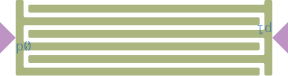

Tutorial: Building a Component
Components are reusable, parameterized building blocks that encapsulate geometry and connection points. In this tutorial, you'll create your first component, an interdigital capacitor.
What You'll Learn
- Understanding the component abstraction
- Defining component parameters with
@compdef - Implementing geometry with
_geometry! - Defining hooks for connections
- Using your component in layouts
Prerequisites
- Completed Working with Paths tutorial
- Understanding of cells, rendering, and paths
Setup
using DeviceLayout, .PreferredUnits # As usual
using FileIO # As usual
using DeviceLayout.SchematicDrivenLayout # For ComponentsWhy Components?
So far, we've created geometry directly. This works for simple layouts, but becomes unwieldy as designs grow. Components solve this by:
- Encapsulating geometry: Define once, use many times
- Parameterizing designs: Change dimensions without rewriting code
- Defining connections: Specify where and how components connect
- Enabling automation: Let the schematic system handle placement
Step 1: Define the Component Structure
Let's create a simple capacitor component. First, define the struct:
"""
MyCapacitor <: Component
A simple interdigitated capacitor with two terminals (positive pattern).
# Parameters
- `name`: Component name
- `finger_length`: Length of each finger
- `finger_width`: Width of each finger
- `finger_gap`: Gap between fingers
- `finger_count`: Number of finger pairs
- `rounding`: Rounding radius for metal corners
# Hooks
- `p0`: Left terminal
- `p1`: Right terminal
"""
@compdef struct MyCapacitor <: Component
name = "capacitor"
finger_length = 100μm
finger_width = 5μm
finger_gap = 3μm
finger_count::Int = 4
rounding = 1μm
endThe @compdef macro creates:
- A struct with the specified fields
- Default values for each field
- A keyword constructor:
MyCapacitor(finger_length=200μm, ...) - Required methods for component operation
We can now create a component:
cap1 = MyCapacitor(
finger_length = 150μm,
finger_count = 6,
name = "cap1"
)Main.MyCapacitor "cap1" with non-default parameters (name = "cap1", finger_length = 150 μm, finger_count = 6)But we still need to define two methods ourselves: _geometry! and hooks.
Step 2: Implement the Geometry
Define how the component's geometry is generated by creating a new method for SchematicDrivenLayout._geometry!. When we extend an existing function with a new method for our custom type, we need to qualify the function name in the definition with the module it comes from. If we just define function _geometry!(...), then DeviceLayout won't know to call that method internally, so we define function SchematicDrivenLayout._geometry!:
function SchematicDrivenLayout._geometry!(cs::CoordinateSystem, cap::MyCapacitor)
(; finger_length, finger_width, finger_gap, finger_count, rounding) = cap
# Calculate dimensions
pitch = finger_width + finger_gap
total_height = finger_count * pitch
# Create the two bus bars
left_bus = Rectangle(finger_width, total_height)
right_bus = Translation(finger_length + finger_gap + finger_width, 0nm)(
Rectangle(finger_width, total_height)
)
finger_rect = Align.rightof(Rectangle(finger_length, finger_width), left_bus)
left_fingers = [
Align.flushbottom(
finger_rect, left_bus, offset = (i - 1) * pitch
) for i in 1:2:finger_count
]
finger_rect = Align.leftof(Rectangle(finger_length, finger_width), right_bus)
right_fingers = [
Align.flushbottom(
finger_rect, left_bus, offset = (i - 1) * pitch
) for i in 2:2:finger_count
]
# Take union before rounding
all_metal = union2d([left_fingers; right_fingers], [left_bus, right_bus])
# Apply rounding
rounded_metal = Rounded(all_metal, rounding) # Creates a StyledEntity
# Place in the geometry
place!(cs, rounded_metal, :metal)
return cs
endNotice that we take the union before applying rounding. This is necessary to correctly round corners where the original polygons meet. Moreover, Boolean operations like union2d use polygon clipping, so entities are converted to polygons before applying the operation. If we had rounded first, then taking the union would discretize those rounded corners into piecewise linear segments. Not only does that make the union operation more expensive, but it loses information that can be used with backends other than GDS.
Step 3: Inspect the Geometry
Now we can draw the component's geometry:
cs1 = geometry(cap1)geometry(cap1) returns a CoordinateSystem that's been passed through the _geometry! method we defined. Calling geometry again does not re-generate the geometry, and instead returns the same CoordinateSystem:
cs2 = geometry(cap1)
cs2 === cs1 # object identity is the sametrueStep 4: Define the Hooks
Hooks specify where the component connects to other components, along with an inward-pointing direction:
function SchematicDrivenLayout.hooks(cap::MyCapacitor)
(; finger_length, finger_width, finger_gap, finger_count) = cap
# Calculate dimensions
pitch = finger_width + finger_gap
total_height = finger_count * pitch
center_y = total_height / 2
total_width = finger_length + finger_gap + 2*finger_width
# Left hook: pointing right (+x direction, 0°)
p0 = PointHook(Point(0nm, center_y), 0°)
# Right hook: pointing right (-x direction, 180°)
p1 = PointHook(Point(total_width, center_y), 180°)
# Return NamedTuple with names p0 and p1
return (; p0, p1) # (equivalent to (; p0 = p0, p1 = p1))
endStep 5: Inspect the Hooks
Directly inspect the NamedTuple returned by hooks:
# Get hook information
h = hooks(cap1)
println("Hooks: ", keys(h))
println("p0: $(h.p0.p), $(h.p0.in_direction)")
println("p1: $(h.p1.p), $(h.p1.in_direction)")Hooks: (:p0, :p1)
p0: (0.0 nm,24000.0 nm), 0.0°
p1: (163.0 μm,24.0 μm), 180.0°To inspect them visually, add the component to a new coordinate system and place some arrows on its hooks:
annotated_cs = CoordinateSystem("annotated_cap")
addref!(annotated_cs, cap1) # Components are structures, you can create references
# Triangle pointing right with tip at the origin
arrow = Polygon(Point(0,0)μm, Point(-10, 10)μm, Point(-10, -10)μm) # counterclockwise!
# Create a hook to easily compute transformations
# At tip of the triangle, "inward direction" pointing the other way
arrow_hook = PointHook(Point(0, 0)μm, 180°)
for hookname in keys(hooks(cap1))
# Calculate transformation required to place `arrow_hook` on `hookname`
# ... inward directions pointing opposite each other
# ... so arrow is pointing along inward direction of `hookname`
trans = transformation(hooks(cap1, hookname), arrow_hook)
place!(annotated_cs, trans(arrow), :annotation)
# Add a label too
textstyle = PolyTextSansMono(5μm, SemanticMeta(:text))
addref!(annotated_cs, polytext("$hookname", textstyle), trans)
end
annotated_cs
Step 6: Use Component Parameters
Components provide methods to inspect parameters. A component can also be used as a "template", providing defaults for new instances:
# Get all parameters as a NamedTuple
params = parameters(cap1)
println("Parameters: ", params)
# Get only non-default parameters
println("Non-default: ", SchematicDrivenLayout.non_default_parameters(cap1))
# Create a modified copy using the first as a template
# Also valid: `cap1(name=...)`
cap2 = set_parameters(cap1, name="cap2", finger_gap=5μm, finger_count=8)Main.MyCapacitor "cap2" with non-default parameters (name = "cap2", finger_length = 150 μm, finger_gap = 5 μm, finger_count = 8)The new capacitor has the same parameters as the original, except where they were overridden by keyword arguments in the last line.
Step 7: The @component Macro
Above, we have variables named cap1, cap2, where we assigned them the same names as parameters. We can set the name automatically from the variable name using the @component macro:
@component cap3 = MyCapacitor begin
finger_count = 10
endMain.MyCapacitor "cap3" with non-default parameters (name = "cap3", finger_count = 10)We can also use this idiom with a template:
@component cap4 = cap1 begin
finger_count = 10
endMain.MyCapacitor "cap4" with non-default parameters (name = "cap4", finger_length = 150 μm, finger_count = 10)Finally, we can create arrays of components:
@component cap_finger_sweep_[1:10] = cap1 begin
finger_length = 150μm # All with the same finger length
finger_count .= 2:2:20 # All with different finger count
end10-element Vector{Main.MyCapacitor}:
Main.MyCapacitor "cap_finger_sweep_1" with non-default parameters (name = "cap_finger_sweep_1", finger_length = 150 μm, finger_count = 2)
Main.MyCapacitor "cap_finger_sweep_2" with non-default parameters (name = "cap_finger_sweep_2", finger_length = 150 μm)
Main.MyCapacitor "cap_finger_sweep_3" with non-default parameters (name = "cap_finger_sweep_3", finger_length = 150 μm, finger_count = 6)
Main.MyCapacitor "cap_finger_sweep_4" with non-default parameters (name = "cap_finger_sweep_4", finger_length = 150 μm, finger_count = 8)
Main.MyCapacitor "cap_finger_sweep_5" with non-default parameters (name = "cap_finger_sweep_5", finger_length = 150 μm, finger_count = 10)
Main.MyCapacitor "cap_finger_sweep_6" with non-default parameters (name = "cap_finger_sweep_6", finger_length = 150 μm, finger_count = 12)
Main.MyCapacitor "cap_finger_sweep_7" with non-default parameters (name = "cap_finger_sweep_7", finger_length = 150 μm, finger_count = 14)
Main.MyCapacitor "cap_finger_sweep_8" with non-default parameters (name = "cap_finger_sweep_8", finger_length = 150 μm, finger_count = 16)
Main.MyCapacitor "cap_finger_sweep_9" with non-default parameters (name = "cap_finger_sweep_9", finger_length = 150 μm, finger_count = 18)
Main.MyCapacitor "cap_finger_sweep_10" with non-default parameters (name = "cap_finger_sweep_10", finger_length = 150 μm, finger_count = 20)Summary
In this tutorial, you learned:
- Component structure:
@compdefcreates parameterized structs - Geometry:
_geometry!defines what to draw,geometry()returns the component's coordinate system - Hooks:
hooksdefines connection points - Parameters:
parameters()andset_parameters()for inspecting and creating modified copies - The
@componentmacro:@componentto construct and automatically name new components
Next Steps
Components really shine when used in schematic-driven layout. Continue to Schematic Basics to learn how to connect components in a schematic and have the layout automatically generated.
See Also
- Components Reference for complete API
- ExamplePDK for real component examples
- Component Style Guide for best practices in defining components